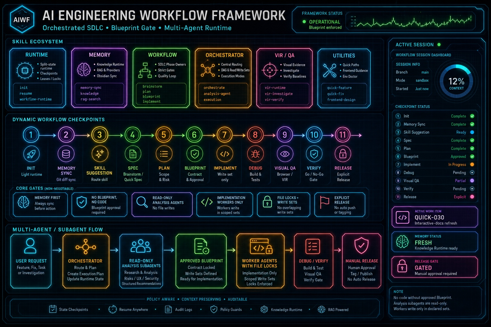

Đây là website tài liệu tương tác và giả lập quy trình kỹ thuật phần mềm dành cho AI Coding Agent. Hệ thống quản lý toàn bộ chu trình phát triển (SDLC) một cách tự động, bảo mật và an toàn bằng cách gác các chốt duyệt (Approval Gates) và kiểm soát chất lượng qua từng Checkpoint từ 1 đến 10.

Bộ tài liệu này được cấu hình tự động đóng gói và phát hành từ thư mục interactive-docs/ thông qua GitHub Actions trên repository kyleit/AI-Agent-Workflow.
Địa chỉ website: https://kyleit.github.io/AI-Agent-Workflow/
Dành cho các tính năng có độ phức tạp cao, ảnh hưởng lớn đến cấu trúc và kiến trúc mã nguồn. Quy trình đi qua đầy đủ 10 bước nghiêm ngặt.
Thiết lập trạng thái dự án, tạo file .session.json và chọn mức độ phân quyền.
python skills/workflow-runtime/scripts/workflow_runtime.py init --permission 1
Quét git diff và đồng bộ cơ sở dữ liệu vector để đảm bảo Agent nắm được toàn bộ thay đổi gần nhất.
python skills/workflow-runtime/scripts/workflow_runtime.py usage sync
Agent phân tích yêu cầu của người dùng và phác thảo ý tưởng thiết kế sơ bộ vào thư mục docs/brainstorming/.
python skills/workflow-runtime/scripts/workflow_runtime.py start --skill "brainstorming" --command "brainstorm" --checkpoint 3 --step "Brainstorming FEAT-015"
Xây dựng Kế hoạch thực thi (Implementation Plan) và danh sách công việc task.md.
Tạo bản thiết kế Blueprint tại thư mục docs/designs/ chi tiết từng class, hàm, API sẽ thay đổi và đăng ký lên CLI để khóa cứng phạm vi sửa đổi.
Thực hiện viết code dựa theo đúng mô tả của Blueprint. CLI sẽ chặn đứng mọi hành vi sửa code nằm ngoài Blueprint.
Biên dịch dự án, chạy unit tests, sửa đổi các lỗi phát sinh cho đến khi đạt trạng thái PASS.
Chạy kiểm thử giao diện trực quan cho các thành phần UI (nếu dự án có thành phần UI).
Đối chiếu toàn diện sản phẩm với Đặc tả ban đầu để phê duyệt chất lượng release.
Bump version, kết xuất changelog và đẩy code lên kho GitLab/GitHub.
Khai báo và thiết lập phiên làm việc mới, chọn mức độ phân quyền.
python skills/workflow-runtime/scripts/workflow_runtime.py init --permission 1
Khôi phục nhanh checkpoint làm dở khi đổi hội thoại.
python skills/workflow-runtime/scripts/workflow_runtime.py init
Tạo điểm khôi phục nhanh (snapshot) và lưu các thay đổi code tạm thời trước khi rollover.
python skills/workflow-runtime/scripts/workflow_runtime.py compact
Tính toán lại lượng token thực tế tiêu thụ dựa trên tệp log transcript mới nhất.
python skills/workflow-runtime/scripts/workflow_runtime.py usage sync
Xem thông tin chi tiết về phiên làm việc hiện tại, checkpoint và dung lượng token context usage.
python skills/workflow-runtime/scripts/workflow_runtime.py heartbeat
Hiển thị bảng liệt kê trạng thái của từng hành động nhạy cảm (Được phép / Cần phê duyệt).
python skills/workflow-runtime/scripts/workflow_runtime.py permission
Hành động của Agent...